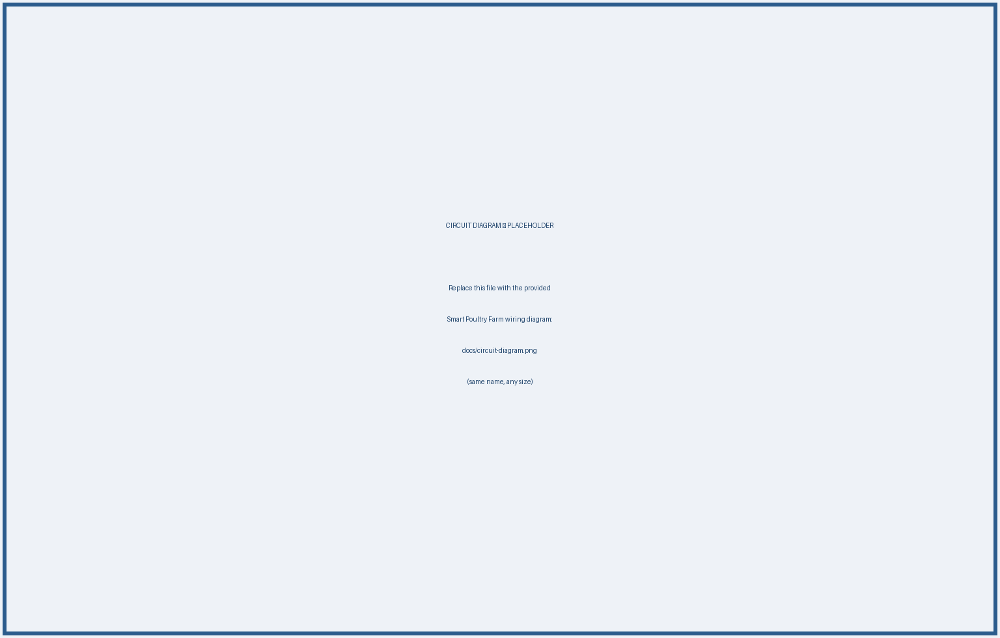

Agriculture and poultry farming play a vital role in the economy of many developing countries. Modern poultry farms require continuous monitoring of feeding systems, water availability, and security. Traditional poultry farm management relies heavily on manual labour, which is time-consuming, increases operational cost, and is prone to human error.
This project presents an IoT-Based Smart Poultry Farm Monitoring and Automation System built around a dual-controller architecture using an Arduino Uno and a Raspberry Pi. The system automates gate control, feed dispensing, and water-level monitoring through low-cost sensors and actuators. The Arduino Uno performs real-time sensing and control, while the Raspberry Pi acts as the monitoring and data-processing unit. The result is a low-cost solution that improves farm-management efficiency, reduces labour requirements, and provides a foundation for future IoT-based smart-farming applications such as cloud dashboards and mobile alerts.
Keywords: Smart Poultry Farm, Arduino Uno, Raspberry Pi, IoT, Automation, Ultrasonic Sensor, Water Sensor, Servo Motor, Smart Agriculture.
Manual labour: Traditional poultry farm management depends on continuous human supervision for feeding, watering, and security. This raises operational cost, is time-consuming, and is prone to errors when a worker is unavailable or distracted.
Feeding & water: Irregular feeding and unnoticed shortages of drinking water directly affect the health and productivity of the flock. A farmer cannot watch the feed container and water trough every minute of the day.
Security & access: Farm gates are often operated manually, which is inconvenient and offers no automatic record of activity. An automated, sensor-driven system can address these gaps by performing routine tasks reliably and notifying the farmer only when attention is required.
Several researchers have developed smart poultry-farming systems using IoT and embedded technologies.
A self-powered IoT-based smart poultry-farm system was developed to monitor environmental parameters and automate farm operations. The study demonstrated improved efficiency and reduced energy consumption [1].
An IoT-based poultry-farm monitoring system was proposed using real-time data-analysis techniques. The system monitored feed levels, water levels, and environmental conditions remotely [2].
A smart poultry-management system using Arduino-based automation was developed to automate feeding and environmental monitoring, reducing human intervention [3], [5].
Other studies emphasise farm security and safe, authorised access control [4]. Collectively, these studies indicate that automation and IoT technologies significantly improve poultry-farm productivity and management efficiency.
The project follows an iterative cycle that integrates the hardware modules into a simple rule engine running on the Arduino, with the Raspberry Pi providing higher-level monitoring. The Arduino reads the ultrasonic and water sensors, applies threshold-based decisions, and drives the servo motors and buzzer. Sensor values are then streamed to the Raspberry Pi over serial communication for logging and display.
The proposed system consists of two processing units:
1. Arduino Uno — handles low-level, real-time operations: reading the ultrasonic sensors, reading the water-sensor data, controlling the servo motors (gate and feed), and activating the buzzer alarm.
2. Raspberry Pi — works as the monitoring and high-level data-processing unit: receiving sensor data through serial communication, processing and logging it, and enabling future cloud and mobile integration.
3. Sensor Layer: Gate ultrasonic sensor (HC-SR04), Feed ultrasonic sensor (HC-SR04), and a Water Sensor Module.
4. Actuation Layer: two servo motors (gate and feed dispenser) and a buzzer for the low-water alarm, powered from a stable external 5 V supply.
5. Application Layer: a monitoring dashboard on the Raspberry Pi for real-time data viewing, event logging, and future remote access.
System Flow: Sensors → Arduino Uno → Raspberry Pi → Monitoring Dashboard
| Category | Component | Qty | Purpose |
|---|---|---|---|
| Control | Arduino Uno | 1 | Real-time sensing and actuator control. |
| Control | Raspberry Pi | 1 | Monitoring, data processing, and logging. |
| Gate | HC-SR04 Ultrasonic Sensor | 1 | Detect an approaching object at the gate. |
| Feeding | HC-SR04 Ultrasonic Sensor | 1 | Measure feed level in the container. |
| Drive | Servo Motor | 2 | Open/close the gate and dispense feed. |
| Water | Water Sensor Module | 1 | Detect water availability / shortage. |
| Alarm | Buzzer | 1 | Audible low-water alert for the farmer. |
| Prototyping | Breadboard & Jumper Wires | — | Circuit assembly and interconnection. |
| Power | External 5 V Power Supply | 1 | Stable supply for servos and modules. |
The following table summarises the estimated hardware budget based on the component list.
| Item Description | Unit Price (BDT) | Qty | Total (BDT) |
|---|---|---|---|
| Raspberry Pi 3 (4GB) | 14,100 | 1 | 14,100 |
| MicroSD Card (32 GB, Class 10) | 1,000 | 1 | 1,000 |
| Arduino Uno | 427 | 1 | 427 |
| HC-SR04 Ultrasonic Sensor | 90 | 2 | 180 |
| Servo Motor (SG90 / MG-series) | 120 | 2 | 240 |
| Water Level Sensor Module | 49 | 1 | 49 |
| Passive Buzzer | 15 | 1 | 15 |
| Breadboard | 120 | 1 | 120 |
| Jumper Wires (set) | 200 | 1 | 200 |
| External 5 V Power Supply (2A) | 300 | 1 | 300 |
| Grand Total (Estimated) | — | — | 16,631 |
* Prices are indicative local-market estimates (BDT) for budgeting purposes and may vary by vendor.
The work plan is organised into design, implementation, integration, and validation phases. Parallel development is used where possible (e.g., firmware and dashboard).
| Phase / Task | Month 1 | Month 2 | Month 3 | Month 4 |
|---|---|---|---|---|
| Requirements & component selection | ✔ | |||
| Software / hardware setup | ✔ | |||
| Automatic gate control (ultrasonic + servo) | ✔ | ✔ | ||
| Automatic feeding system | ✔ | |||
| Water monitoring + buzzer alarm | ✔ | ✔ | ||
| Serial communication & data logging | ✔ | |||
| Monitoring dashboard | ✔ | ✔ | ||
| Integration testing & documentation | ✔ |
Automatic gate control: an ultrasonic sensor is placed near the poultry gate; when an object is detected within a predefined distance, the Arduino drives a servo motor to open the gate, and the gate closes automatically after a fixed delay.
Automatic feeding: a second ultrasonic sensor monitors the feed level; when it drops below the threshold, a servo motor rotates to release additional feed into the container.
Water monitoring: a water sensor continuously monitors availability; if the level becomes insufficient, the buzzer generates an alarm to notify the farmer.
The developed prototype successfully demonstrated:
The system reduced manual intervention and showed stable operation during testing.
This section presents the circuit diagram, block diagram, and flow chart of the Smart Poultry Farm Automation System.

The system can be enhanced by integrating:
This project successfully demonstrates the implementation of an IoT-Based Smart Poultry Farm Monitoring and Automation System using Arduino Uno and Raspberry Pi. The system automates feeding, gate control, and water monitoring while providing a platform for future IoT integration. The dual-controller architecture keeps the system responsive to real-time events while supporting higher-level data processing on the Raspberry Pi. The proposed solution reduces labour cost, improves productivity, and supports the development of modern smart-farming technologies.
[1] “Self-Powered IoT-Based Design for Multi-Purpose Smart Poultry Farm,” Springer Nature. Available: https://doi.org/10.1007/978-981-15-7062-9_5
[2] “Implementation of IoT-Based Poultry Farm Monitoring System with Real-Time Data Analysis,” IEEE Xplore. Available: https://ieeexplore.ieee.org/document/11160018
[3] “IoT-Based Smart Poultry Management System,” ResearchGate. Available: https://www.researchgate.net/publication/380119628
[4] “IoT-Based Smart System for Safe and Secure Poultry Farming.” International Journal on Recent and Innovation Trends in Computing and Communication. Available: https://ijritcc.org/index.php/ijritcc/article/view/11141
[5] “Development of Smart Chicken Poultry Farm Using RTOS on Arduino,” IEEE Xplore. Available: https://ieeexplore.ieee.org/document/9057310